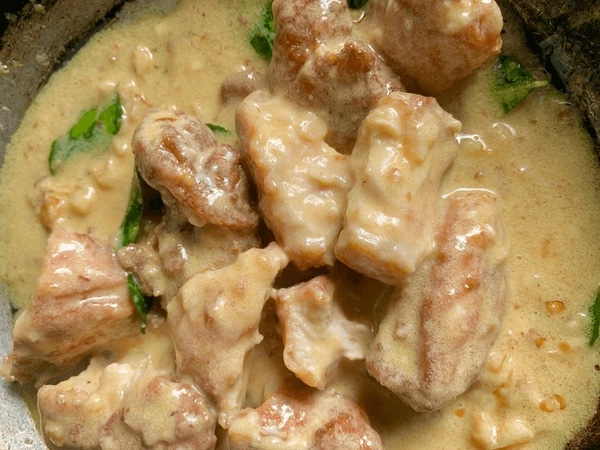

Chicken with White Sauce (2 Servings)
Ingredients:
For the batter:
(Alternatively, use 1 packet of instant batter mix from an Asian store)
- 2 boneless chicken thighs or chicken breasts (about 250g), cut into bite-sized pieces
- 2 tablespoons cornstarch
- 1 egg
- ¼ teaspoon white pepper
- ¼ teaspoon Chinese five-spice powder
- ¼ teaspoon black pepper
- ½ teaspoon garlic powder
- ½ teaspoon onion powder
- Optional: instant batter mix
For the White Sauce:
- 2–3 Thai chilies, finely chopped (adjust for heat preference)
- 6–8 curry leaves
- 2 tablespoons butter
- ½ cup evaporated milk
- 2 tablespoons grated Parmesan cheese (or more to taste)
- ¼ teaspoon MSG (optional)
- 2 garlic cloves, minced
Instructions
- Prepare the Chicken: In a mixing bowl, combine cornstarch, egg, white pepper, five-spice powder, black pepper, garlic powder, and onion powder. Mix to create a batter. Add the chicken pieces to the batter, ensuring they’re well coated. Set aside for at least 10 minutes to marinate.
-
Cook the Chicken:
- Heat oil in a deep pan or wok over medium heat.
- Fry the chicken pieces in batches until golden brown and cooked through, about 4–5 minutes per batch. Remove and set aside on a paper towel to drain excess oil.
-
Make the White Sauce:
- In a clean pan or wok, melt the butter over medium heat.
- Add the minced garlic and cook until fragrant, about 30 seconds.
- Toss in the Thai chilies and curry leaves, letting them sizzle for 1–2 minutes.
- Pour in the evaporated milk and bring to a gentle simmer.
- Stir in the Parmesan cheese and MSG (if using) until the cheese melts and the sauce thickens slightly.
-
Combine:
- Add the fried chicken to the white sauce and toss to coat evenly.
- Simmer for another minute to allow the flavors to meld.
- Serve and Enjoy: Plate the chicken with the sauce and serve hot. Garnish with extra curry leaves or chilies for presentation, if desired.
Rate and Comment